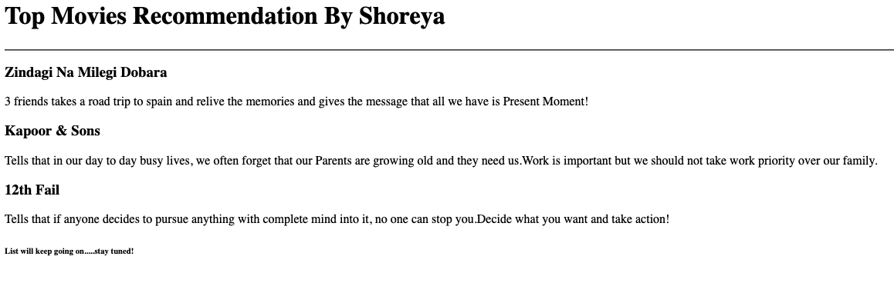
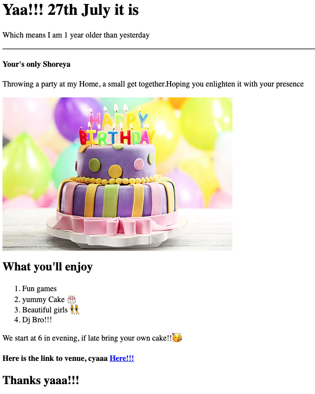

MY RESUME
SHOREYA GUPTA
D-77 Ramprastha Colony
Ghaziabad UP-201011
9716723882
gupta.shoreya2707@gmail.com
About Me
Hobbies
Education
Summary
I am Software Engineer Graduate with 5+ yr of work experience in different
profiles.
I enjoy solving problems and building good products which are
actually meaningfull to the end users.
This is my practice capstone
project, which will also be my first multipage website
Experiences
-
Wipro Technologies
Application Project Engineer
Tenure: May 2018 - Oct 2019
Summary - Worked as support engineer for Cisco Account and used to
build ETL pipelines using Informatica Tool and Mysql server
-
Navia Life Care Technologies
Python Backend Engineer
Tenure: Oct 2019 - Dec 2021
Summary - Worked as Backend Engineer for healthcare Product. Here I build backend apis using Python/Django technology.
I liked this job because we built an amazing product which was catering to Doctors/Patients and helping them to track treatments and medical
history of patients.
-
Changecx
Senior Software Engineer
Tenure: Jan 2022 - Aug 2022
Summary - worked as senior software engineer, I learnt different technology here . Built stonemore payment app on Nodejs and Javascript
-
Betterworks
Software Engineer 1
Tenure: Sept 2022 - Present
Summary - working as Software Engineer and building Insights/Analytics platform for Betterworks clients. Leading Visier Integration project where we built data pipelines/jobs which daily runs to provide updated data to Visier SFTP servers.
Using Raw SQL queries heavily and python code.
Projects
-
Movie Ranking project

-
Birthday Invite project
